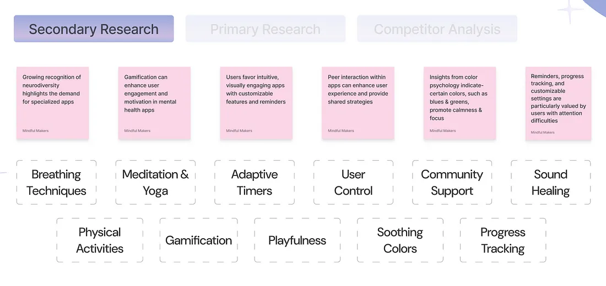
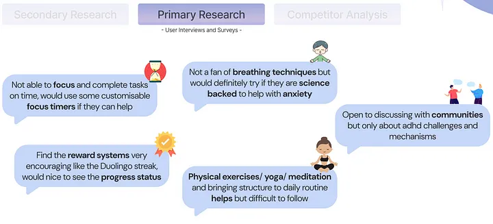
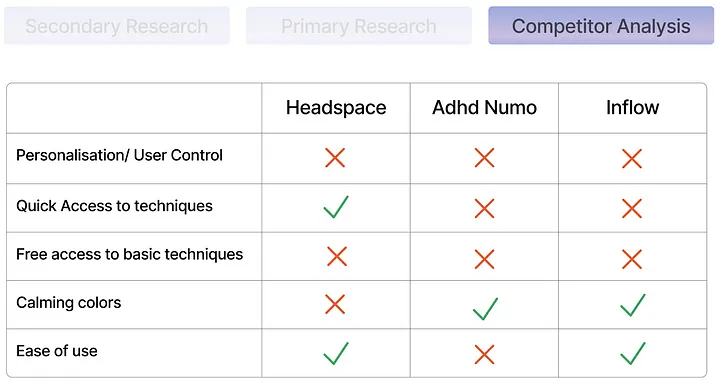
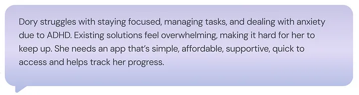
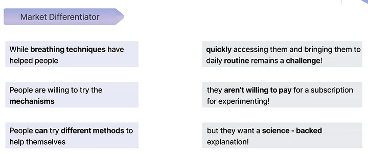
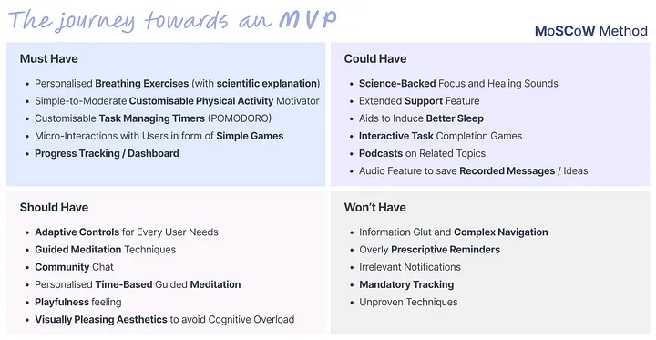
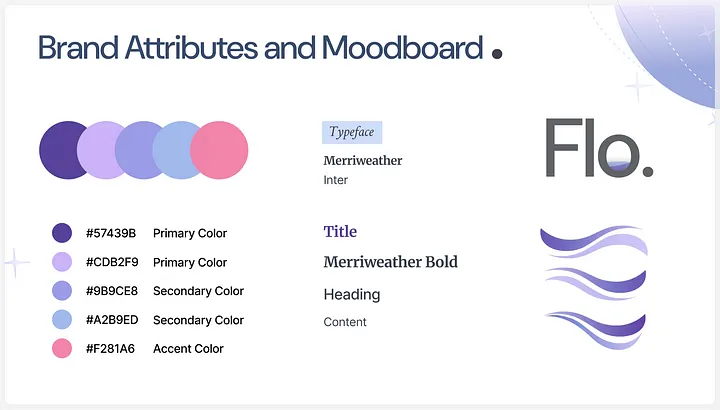
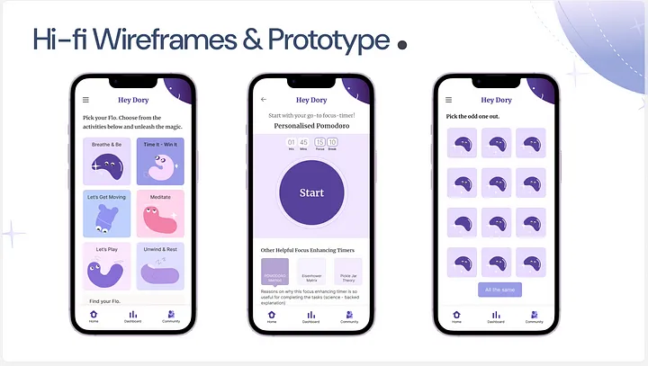

Flo - Wellness App Case Study
Project Overview
This project focuses on creating Flo, a wellness app designed to help individuals with ADHD or those on the lighter spectrum of neurodivergence. The app's primary goal is to empower users to manage their condition by fostering mindfulness and promoting self-care routines through a user-friendly digital tool.
Flo leverages user-centric design to address core challenges faced by neurodivergent individuals, focusing on one key aspect: improving focus and emotional regulation through guided breathing exercises, reminders, and motivational nudges.
This solution focuses on helping people with ADHD or people who fall on the Neurodivergence spectrum, to manage their symptoms effectively and track their progress.
Research


User Persona:
Name: Dory
Occupation: Freelance Graphic Designer
Bio: Dory struggles with time management and focus, often feeling frustrated by incomplete tasks. They seek a supportive tool to manage daily routines and provide a sense of accomplishment.
Needs:
- A calming and intuitive interface to avoid overstimulation.
- Personalized reminders and progress tracking.
- Encouragement through positive feedback and playful interactions.
- Playfulness and gamification to pique interest.
Problem Statement
Ideation:

Design:

Conclusion: Key Learnings and Future Steps
The development of Flo has been a significant step toward creating a supportive tool for individuals with ADHD or those on the neurodivergence spectrum. By focusing on user-centric design principles, we successfully addressed the unique needs of this audience, resulting in an engaging and effective wellness app prototype.
Key Learnings
- Emotional Engagement Enhances Usability: The jelly bean mascot proved instrumental in fostering an emotional connection with users, underscoring the importance of empathy-driven design.
- Simplicity Reduces Cognitive Load: A calming interface and clear visual hierarchy helped users navigate the app effortlessly, emphasizing the need for minimalist and intuitive design for neurodivergent audiences.
- Personalization Drives Satisfaction: Features like tailored reminders and progress tracking resonated strongly with users, highlighting the value of customizable elements.
Future Steps
- Gamification for Habit Formation: Introduce interactive challenges and rewards to motivate users in developing and maintaining routines.
- Multi-Platform Availability: Expand to Android and web platforms to enhance accessibility and reach a broader audience.
- Enhanced User Feedback Mechanisms: Incorporate dynamic customization options and feedback loops to continuously adapt to individual needs.
- Long-Term Impact Metrics: Develop tools for users to track emotional and behavioral improvements over time to validate the app’s effectiveness.
With these steps, Flo has the potential to grow into an indispensable companion for neurodivergent individuals, empowering them to navigate their daily lives with confidence and ease.